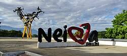

Neiva
<<<<<<< HEAD <<<<<<< HEAD <<<<<<< HEAD ======= ======= >>>>>>> garzon ======= >>>>>>> neiva

>>>>>>> campoalegre
=======
=======
>>>>>>> neiva
El Municipio de Neiva está ubicado en el centro del Departamento del Huila, distando 22 Km de perímetro urbano a perímetro urbano, entre la ciudad de Campoalegre y la ciudad de Neiva, medida tomada sobre la vía troncal del sur, que une la mayoría de los municipios regionales. El poblado fue fundado el 14 de agosto de 1809, recibió el título de aldea en 1840 y el de municipio en 1860.
<<<<<<< HEAD
>>>>>>> garzon
=======
>>>>>>> neiva
Contenido de la página Neiva.